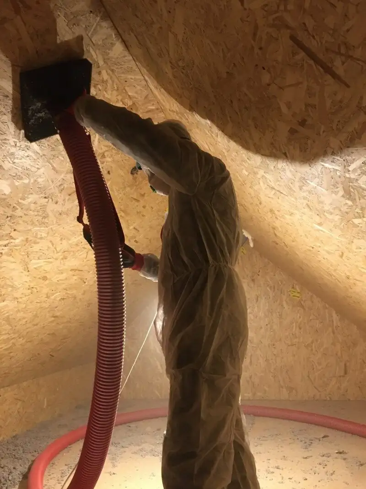

Domy drewniane i szkieletowe
Budownictwo drewniane, regionalne i szkieletowe. Wybieramy rozwiązania najbardziej optymalne dla inwestora, z myślą o środowisku.


Konstancin-Jeziorna, Warszawa i okolice
Budujemy energooszczędnie z drewna, betonu konopnego i wdmuchiwanej wełny. Tak, żeby po budowie zostało jak najmniej odpadów.
Porozmawiajmy o budowieZaczynaliśmy w branży instalatorskiej, od instalacji elektrycznych. Dziś budujemy domy drewniane, regionalne i szkieletowe, wypełniamy ściany betonem konopnym, wykonujemy izolacje wdmuchiwane i prowadzimy budowy.
Budownictwo drewniane, regionalne i szkieletowe. Wybieramy rozwiązania najbardziej optymalne dla inwestora, z myślą o środowisku.
Ściany i wypełnienia z paździerza konopi przemysłowych. Naturalny materiał zamiast odpadów trudnych do utylizacji.
Projektujemy i wykonujemy izolacje w całości z wełny: drzewnej, celulozowej, lignocelulozowej lub skalnej.
Kompleksowo koordynujemy i prowadzimy budowy w Warszawie i okolicach, z zachowaniem standardów bezpieczeństwa i wymagań technicznych.
Tradycyjnie budowane domy zostawiają po sobie dużo odpadów, a przy rozbiórce kolejną masę materiałów trudnych do utylizacji. Dlatego szukamy rozwiązań, które to zmieniają.
Najwięcej daje natura, przede wszystkim konopie przemysłowe. Z ich paździerza powstaje beton konopny, którym wypełniamy drewniany szkielet. Stawiamy na materiały biodegradowalne, najwyższej jakości i naturalnego pochodzenia, i na takie zużycie materiału, żeby jak najmniej się marnowało.
W budownictwie energooszczędnym najważniejsze jest niskie zapotrzebowanie domu na energię. Zapewniają je instalacje do produkcji, utrzymania i odzyskiwania energii oraz nowoczesne rozwiązania systemowe, zgodne z najnowszymi wytycznymi technicznymi.
Ocieplenie wdmuchujemy w przegrody w całości z materiałów naturalnych. Pracujemy z wełną:
Każdy budynek traktujemy jako element krajobrazu. Dlatego łączymy surowce naturalne z nowoczesnymi technologiami i optymalnym zużyciem materiałów, żeby budowa była ekonomiczna, ekologiczna i efektywna.
Bierzemy udział także w nowatorskich projektach budowlanych i szukamy rozwiązań, dzięki którym budowa jest opłacalna dla inwestora i jak najmniej uciążliwa dla środowiska.
Firma Hausit działa od kwietnia 2019 roku, ale jej historia zaczyna się w roku 2000. Przez te lata stale poszerzaliśmy wiedzę z zakresu budownictwa.
Nasz zespół to fachowcy, którym można zaufać. Wybieramy rozwiązania najbardziej optymalne dla zleceniodawców, zawsze z myślą o środowisku.
ul. Królowej Marysieńki 5
05-510 Konstancin-Jeziorna
Budowy prowadzimy w Warszawie i okolicach.